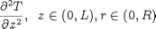

PARTIAL operators may be nested to express higher order derivatives as follows:
PARTIAL( Expression, PARTIAL( Expression, DistributionDomain ), DistributionDomain )
Alternatively, the following abbreviated form may be used:
PARTIAL ( Expression, DistributionDomain, DistributionDomain )
Here differentiation first takes place with respect to the first domain, then with respect to the second etc. For example:

PARTIAL(T(0|+:ReactorLength|-,0|+:ReactorRadius|-,Axial,Axial)